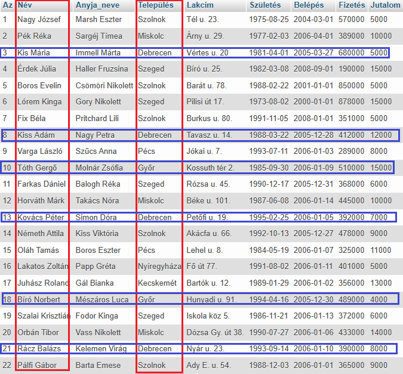
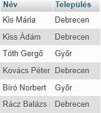
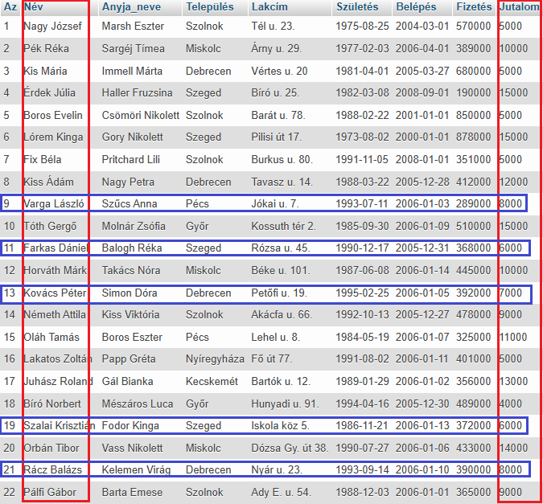
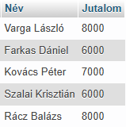
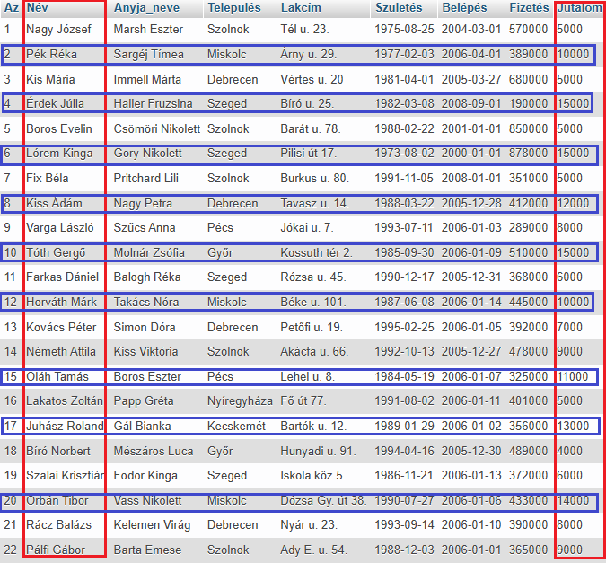
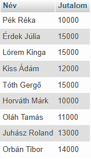

A IN operátort egy WHERE utasításon belül arra használjuk, hogy ellenőrizzük, egy megadott oszlop (mező) értéke megegyezik-e a megadott listán belüli bármely értékkel.
Használhatjuk a NOT operátorral együtt is. Ebben az esetben a nem egyezést vizsgáljuk.
SELECT Név, Település
FROM dolgozók
WHERE Település
IN ("Debrecen", "Győr");


Látható, hogy az eredménytábla a kiválasztott mezőkből áll.
Míg a SELECT az oszlopokra (mező), addig a WHERE a sorokra (rekord) szűr. A kettő metszete adja vissza a eredménytáblát.
A Település oszlopban (mező) keresi a szűrő feltételnek megfelelő értékeket!
SELECT Név, Jutalom
FROM dolgozók
WHERE Jutalom
IN (6000, 7000, 8000);


Látható, hogy az eredménytábla a kiválasztott mezőkből áll.
Míg a SELECT az oszlopokra (mező), addig a WHERE az oszlopkra szűr. A kettő metszete adja vissza a eredménytáblát.
A Jutalom oszlopban (mező) keresi a szűrő feltételnek megfelelő értékeket!
SELECT Név, Jutalom
FROM dolgozók
WHERE Jutalom
NOT IN (4000, 5000, 6000, 7000,
8000, 9000);


Látható, hogy az eredménytábla a kiválasztott mezőkből áll.
Míg a SELECT az oszlopokra (mező), addig a WHERE az oszlopkra szűr. A kettő metszete adja vissza a eredménytáblát.
A Jutalom oszlopban (mező) keresi a szűrő feltételnek megfelelő értékeket!